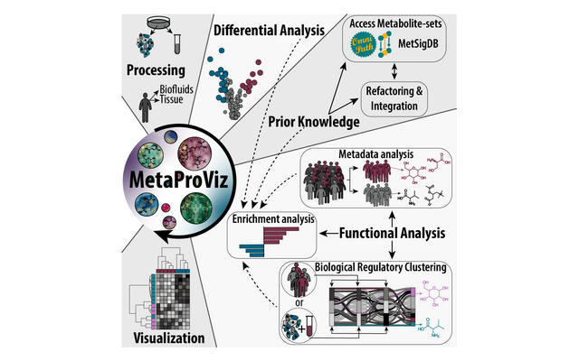
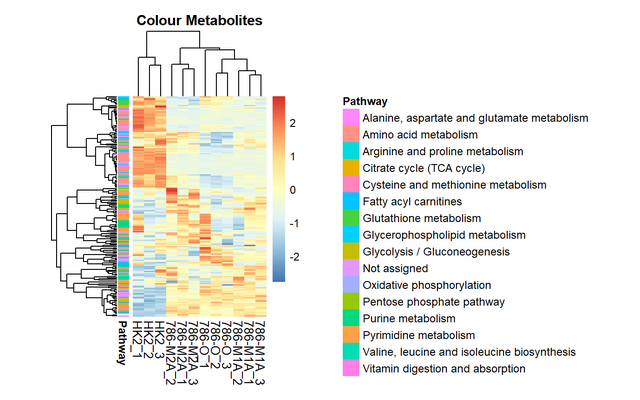
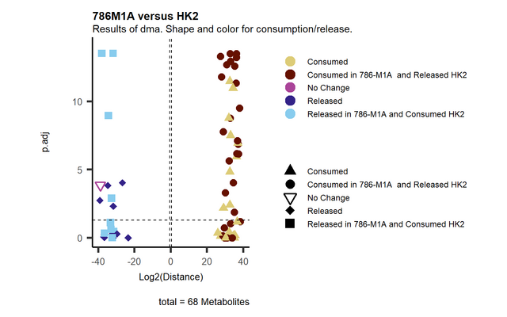
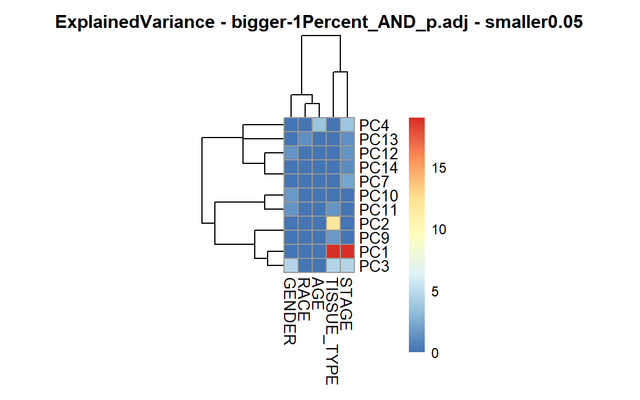
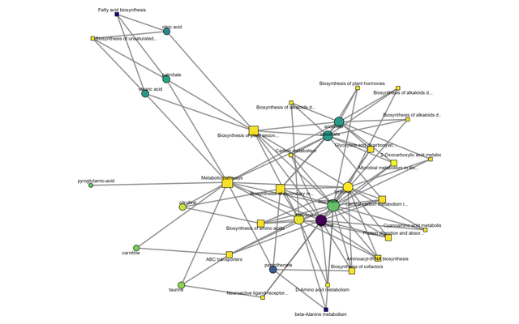
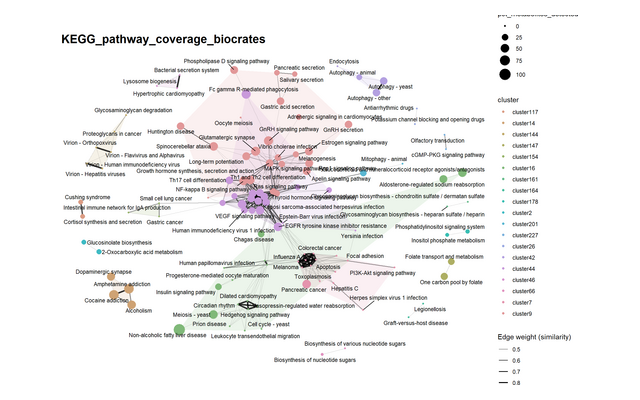
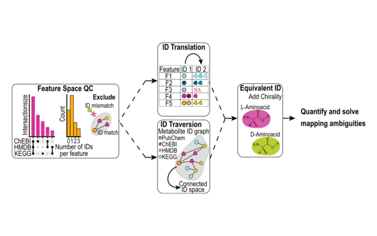
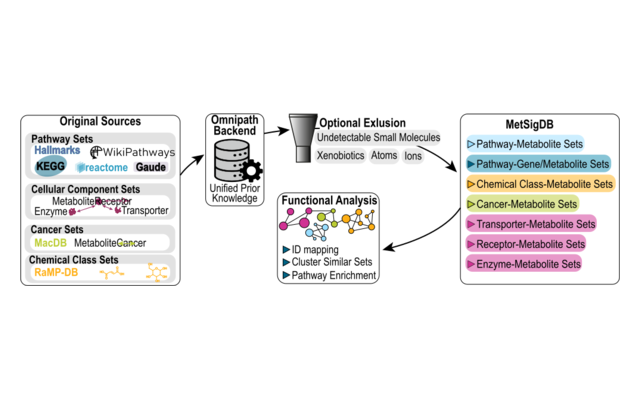

All tutorials use example data that ship with MetaProViz, so you can run every step yourself. If you are new to MetaProViz, start with Getting started. The other tutorials go into more detail on the different data types and on metabolite prior knowledge.
Get started

Getting started
A short tour through the main steps on intracellular cell line data: pre-processing, differential analysis, enrichment analysis, metabolite clustering and plots.
Analysis workflows

Standard Metabolomics
Intracellular metabolomics of kidney cancer cell lines: quality control, pre-processing, differential analysis, ORA, metabolite clustering and all visualisations.

CoRe Metabolomics
Consumption-release data from cell culture media: blank and growth normalisation, differential analysis, clustering together with intracellular data and metabolite-receptor sets.

Sample Metadata Analysis
Tumour and normal tissue of kidney cancer patients: find the metabolites that separate patient groups, compare patient subsets and improve metabolite IDs before enrichment analysis.

Prior Knowledge Networks
Investigate differential analysis results with networks: which transporters the changed metabolites share, which metabolites drive enriched pathways and in which cancers they were reported before.
Prior knowledge and metabolite IDs

Prior Knowledge - Access & Integration
Load metabolite sets from MetSigDB, link them to your measured data, translate metabolite IDs and check how well your data cover each pathway.

ID Processing Workflow
Check the metabolite IDs of your features for consistency and expand them across HMDB, KEGG, ChEBI and PubChem with id_processing().

MetSigDB
The resources in MetSigDB compared: their size, overlap and redundancy, and how their terms cluster.